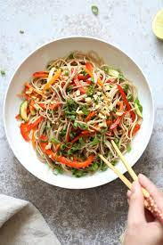

Soba Noodle Salad

Soba Noodles Salad
Soba (そば or 蕎麦, "buckwheat") is a thin Japanese noodle made from buckwheat. The noodles are served either chilled with a dipping sauce, or hot in a noodle soup. This recipe will focus on the cold version
Ingredients
Salad
- 3 spring onions finely chopped
- 1/8 red cabbage finely sliced
- 1 handful of chopped coriander
- 1 red pepper finely sliced
- 400g beef flank steak
- 200g soba noodles
Dressing
- 3 tablespoons of seasame oil
- 3 tablespoons of soy sauce
- 1 glove garlic finely diced
- 1cm cube of crushed ginger
- 1 chopped chilli
- 2 tablespoons of rice wine vinegar
- 1 teaspoon of oyster sauce
- 1 teaspoon brown sugar
Steps
- In a medium size saucepan bring water to the boil.
- While your water comes to the boil, add all ingredients for dressing into a bowl and mix until combined.
- Once you're water has come to the boil, add soba noodles and stir for 3 minutes until cooked. drain and rinse with cold water. put aside for serving.
- Over a hot heat heat a cast iron skillet when hot drizzle a small amount of olive oil, Now place you're flank steak in the skillet and cook for 3-4 minutes before turning over for a remaining 3 minutes. Once the steak is cooked take it out of the skillet and place it on a chopping board to rest for 5mins.
- In a bid salad bowl add your noodles, cabbage, red peppers, and thinly sliced meat. Add the dressing and mix well.
- Serve to individual plates or bowls adding coriander, chillies and spring onions as garnish.
Home